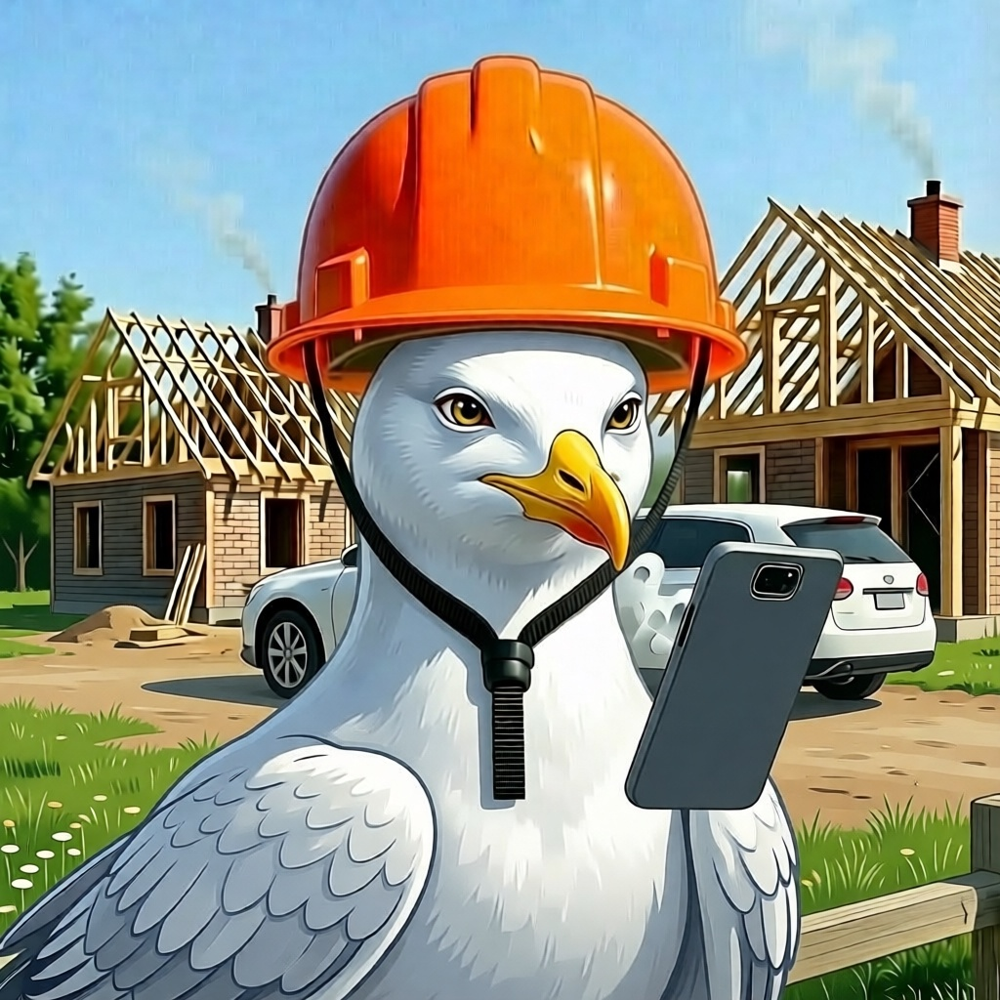

Наши гости — главные герои этого дня
Каждый из них — часть вашей истории. Знакомьтесь с теми, кто сегодня задает настроение!

Вадим Михайлович
Папа невесты
56 лет
Вадим — лучший специалист в сфере строительства. Это не просто профессия, это его призвание. Он — тот человек, который способен возвести дом буквально из ничего. И он доказал это на деле, собственноручно построив дом для своей семьи.
А сегодня он совершил ещё один невероятный поступок: он собрал кухню для молодожёнов буквально из ничего, вложив в неё частичку своей души и своего мастерства. Вадим, спасибо за то, что ты построил не только стены, но и создал прочный и тёплый мир для своей дочери.
Римма Васильевна
Мама невесты
54 лет
Увлекается творчеством в любом его проявлении. Является лучшей подругой, лучшей мамой и самой крепкой поддержкой для невесты, принимала активное участие в изготовлении декора и образа невесты на свадьбу.
Рыбкин ВладИслав
Старший брат невесты
33 лет
Рыбкин Даниил
Средний брат невесты
25 лет
Рыбкин Дарий
Младший брат невесты
18 лет
Говорят, младшие братья всегда самые озорные, но наш Дарий доказывает обратное каждым поступком.
Он — воплощение доброты и отзывчивости, а также главный поклонник кулинарных шедевров своей сестры, особенно её бесподобного тыквенного супа. >
Он — воплощение доброты и отзывчивости, а также главный поклонник кулинарных шедевров своей сестры, особенно её бесподобного тыквенного супа. >
Валенитна
Бабушка невесты
74 года
Титоренко Елена
Сестра жениха
25 лет
Если вы ищете человека, который сочетает в себе доброту, ум и невероятную энергию, то вы его нашли. Лена — будущий врач. Она учится в медицинском вузе, потому что её главная мечта — помогать людям и спасать жизни.
И, кажется, для этой благородной миссии ей просто необходим свой собственный быстрый транспорт! Поэтому Лена сейчас с таким же упорством осваивает вождение в автошколе.
Касаткин Михаил
Парень сестры жениха
27 лет
практикующий терапевт, так что если у кого-то после танцев закружится голова, вы знаете, к кому обратиться. А ещё Миша — настоящий геолог-любитель. Наверное, он ищет не только полезные ископаемые, но и драгоценные камни... например, такой бриллиант, как наша Лена.
Но самое главное его сокровище — это уникальное чувство юмора. Миша — большой ценитель постиронии. Это человек, который может с абсолютно серьёзным лицом называть все места, где можно пить пиво, «бирлогами». И он делает это так убедительно, что ты на секунду задумываешься: а может, так и надо?
Долженкова Лариса
Тётя жениха
75 лет
Лариса — железнодорожник со стажем. Это не просто работа, это призвание, требующее железной выдержки и точности. Сейчас она на заслуженном отдыхе, но её энергия и таланты нашли новое прекрасное применение. Она с безграничной любовью занимается воспитанием внука Артёма, вкладывая в него всю свою мудрость и доброту.
И, конечно, её дом по-прежнему — полная чаша! Она потрясающе готовит, и её кулинарные шедевры — это то, по чему мы все так скучаем.
Долженкова Екатерина
Троюродная сестра жениха
35 лет
Катя — это невероятное сочетание ума и креативности. Как и её мама, она пошла по техническому пути: окончила престижный МИИТ и стала высококлассным инженером.
В свободное от цифр и проектов время Катя любит пересматривать «Гарри Поттера», погружаясь в атмосферу волшебства, и собираться с друзьями за настольными играми. А её любовь к путешествиям говорит о том, что она всегда открыта для новых открытий и приключений.
Павел
Муж Екатерины
42 года
Паша тоже из мира техники, но его душа рвётся за горизонт. Паша — настоящий путешественник, покоритель экзотических мест. Для него идеальный отпуск — это не пляж, а исследование новых культур и невероятных пейзажей. И он всегда берёт с собой свою команду: любимую жену Катю и юного исследователя Артёма. Благодаря Паше эта семья — самая опытная в вопросах перелётов и акклиматизации!
Федулов Артём
Троюродный племенник жениха
13 лет
Артём — замечательный пример современного подростка. Он отлично учится в школе и при этом успевает вести очень насыщенную жизнь. Он активно изучает робототехнику и программирование, собирая будущее буквально своими руками. А чтобы тело было так же крепко, как и ум, Артём серьёзно занимается спортом.
Лёзина Наталья
Тётя жениха
75 лет
Наталья — архитектор со стажем. Это профессия, которая требует не только безупречного вкуса, но и математической точности. Она — человек, который видит красоту в линиях и формах. Лучшее доказательство её мастерства — это её собственная квартира, дизайн-проект которой она создала сама от и до.
Сейчас Наталья на пенсии, но её творческая энергия и забота нашли новое применение. Она — человек с огромным сердцем, который очень любит животных. Наталья постоянно помогает бездомным кошечкам и собачкам, окружая их теплом и заботой.
Иванова Ангелина
Троюродная сестра жениха по отцу
28 лет
Ангелина — специалист по проектированию систем водоотведения и кондиционирования воздуха. Она создаёт тот самый комфорт, который мы часто не замечаем, но без которого не можем жить. Это профессия, где инженерная точность встречается с заботой о людях.
Но её душа стремится не только к практичности, но и к полёту! Ангелина обожает путешествовать, открывать для себя новые горизонты и, конечно же, мечтать. И, наверное, чтобы эти мечты были ещё уютнее, дома её всегда ждёт верный друг — французский бульдог по кличке Изюм.
Катя (подруга невесты)
Подруга невесты со школы
23 года
Лиза Елецкая (подруга невесты)
Подруга невесты со школы
22 года
Лиза Панина (подруга невесты)
Подруга невесты со школы
23 года
Анжелика (подруга невесты)
Подруга невесты со школы
23 года
Гузель (подруга невесты)
Подруга невесты со школы
22 года
Наташа (подруга жениха)
Подруга жениха со школы
28 лет
Наташа — это тот редкий человек, который перепробовал себя в самых разных сферах. И что самое удивительное — в каждой из них она добивалась успеха! Её можно назвать настоящим многозадачным гением. Если бы существовала олимпиада по универсальности, Наташа точно взяла бы золото.
И, конечно, её безупречный вкус и чувство стиля — это тоже результат её многогранной натуры. Она всегда в курсе модных тенденций и знает, как одеться так, чтобы произвести впечатление.
Женя Платонов (друг жениха)
Друг жениха со школы
28 лет
Женя — это ходячее противоречие в самом лучшем смысле этого слова. Он педагог по образованию, но его истинная страсть — это завод. Он знает там каждый уголок и, кажется, каждого второго сотрудника лично. А ещё он знает всё о крутых тачках.
Он — тот самый человек, который является центром любой компании. Там, где Женя, всегда слышен смех. Друзья любят его настолько, что называют по-разному: кто-то по-простому — Жека, а кто-то, чтобы подчеркнуть его значимость, на французский манер — Жусье
Женя Галабурда (друг жениха)
Друг жениха со школы
27 лет
Женя — врач-терапевт. И его колоритная фамилия имеет очень сильное происхождение. Она пришла к нам из XIX века, из Польши, и восходит к слову «galabert», что означает «сильный и мужественный». Глядя на то, как он заботится о своих пациентах, понимаешь, что его фамилия — это не просто набор букв, а настоящее призвание.
Это человек с отличным чувством юмора: он искренне радуется, когда пациенты на осмотре достают не только полис, но и коробку конфет «Родные просторы». Вне работы Женя — заядлый «дотер» и просто обожает своего кота.
Никита (друг жениха)
Друг жениха со школы
28 лет
Обладатель диплома одного из лучших вузов страны, МГУ, Никита производит впечатление очень серьёзного и представительного молодого человека. Он из тех людей, у которых, кажется, всё под контролем: от идеально выглаженной рубашки до чёткого плана на жизнь.
Но мы-то знаем его секрет! Под этой строгой и солидной оболочкой скрывается душа настоящего артиста. Никита виртуозно владеет музыкальными инструментами. Будь то гитара, пианино или что-то ещё — в его руках любой инструмент начинает петь.
Женя Цепков (друг жениха)
Друг жениха с университета
29 лет
Женя — топовый сотрудник Сбера, и его карьера — это готовый кейс для учебника по успеху. Обладая обширным техническим бэкграундом и, что самое важное, неустанно следя за развитием новых технологий, он вырос до должности фуллстек-разработчика. Он тот, кто заставляет код работать, а сложные системы — функционировать как часы.
Но знаете, что самое удивительное? При таком напряжённом графике и работе с самыми передовыми технологиями Женя остаётся невероятно весёлым, задорным и жизнерадостным человеком. Он — душа компании и доказательство того, что можно быть одновременно и гуру в IT, и самым позитивным парнем в комнате.
Дарья (жена Жени)
Жена Жени Цепкова
28 лет
Говорят, за каждым великим мужчиной стоит великая женщина. В случае с нашим технарём Женей это абсолютная правда. Она — его правое плечо, надёжная опора и главный помощник во всех бытовых вопросах, позволяя ему творить технологические чудеса.
Кроме того, она обладает изысканным чувством стиля. Это именно тот человек, который не только сама всегда выглядит безупречно, но и держит в красоте своего мужа и создаёт невероятный уют в их общем доме.
Паша (друг жениха)
Друг жениха со школы
23 года
Паша, друг нашего Жени Цепкова, который очень быстро стал и другом нашего жениха!
Паша — веб-разработчик. Возможно, он пишет код так же лихо, как и отрывается на вечеринках. Он — настоящий ценитель светской жизни и всегда знает, где сейчас происходит всё самое интересное. С ним никогда не бывает скучно, потому что Паша живёт в режиме «полный кайф»!
Катя (девушка Димы)
Девушка Димы
30 лет
Катя — девушка нашего Димы!
Говорят, что дом — это не место, а состояние души. Рядом с Катей это состояние ощущается особенно сильно. Она — воплощение той самой заботы и хозяйственности, которые превращают любое жилище в настоящее семейное гнездо, полное тепла и уюта.
Её присутствие — это то, что делает жизнь Димы не просто чередой событий, а счастливой и гармоничной историей.
Дима (друг жениха)
Друг жениха со школы
28 лет
Дима, родной брат уже знакомого нам Паши и одноклассник нашего Жени Цепкова!
Дима обладает широкими инженерными знаниями в области авиастроения и по-настоящему увлечён авиацией. Он — тот человек, который знает, как поднять в небо многотонную машину, и может часами рассказывать о том, как устроен мир на высоте 10 000 метров.
Но, несмотря на такую серьёзную и техническую профессию, он остаётся невероятно дружелюбным и отзывчивым человеком. Дима — из тех людей, кто всегда придёт на помощь, не задавая лишних вопросов.
Марта (знакомая)
Знакомая жениха и невесты
25 лет
Марта, лучшая подруга сестры нашего жениха, Лены. Они вместе грызут гранит науки в медицинском вузе, так что мы доверяем ей не только запечатлеть этот день, но и, в случае чего, оказать первую помощь от переизбытка эмоций!
Марта — это настоящий генератор энергии. Она всегда за любой движ, и её неиссякаемый оптимизм заряжает всех вокруг. А её увлечение фото- и видеосъёмкой — это не просто хобби, а настоящий талант. Именно поэтому сегодня она здесь в своей главной профессиональной роли.
Создано для ведущего свадьбы | Если нужно добавить QR-код или контакты — сообщите!